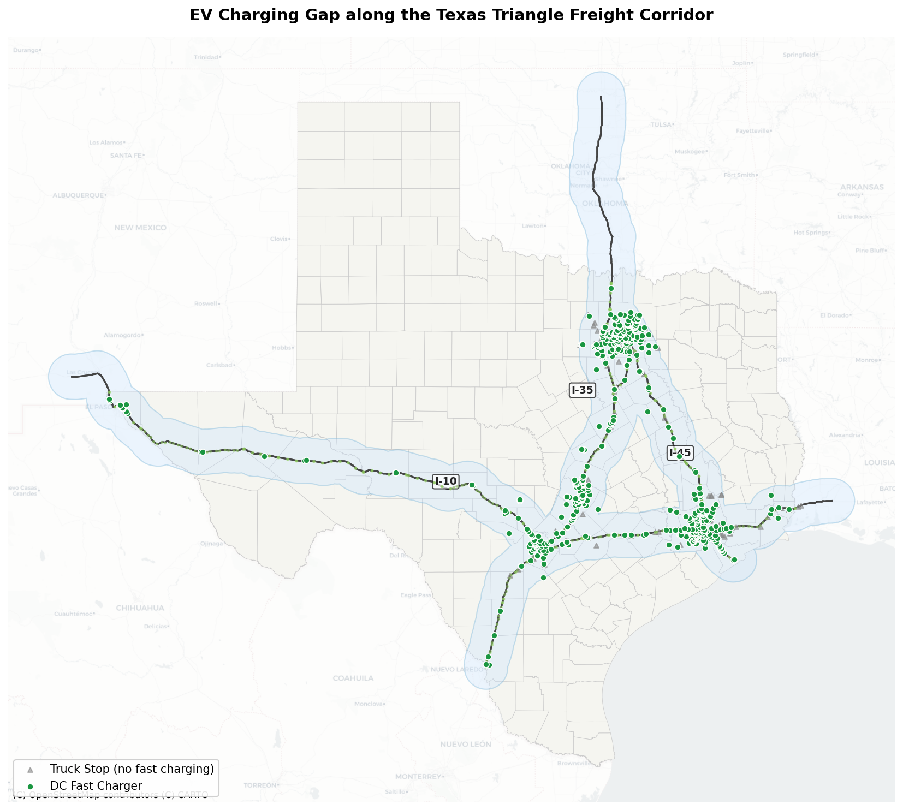
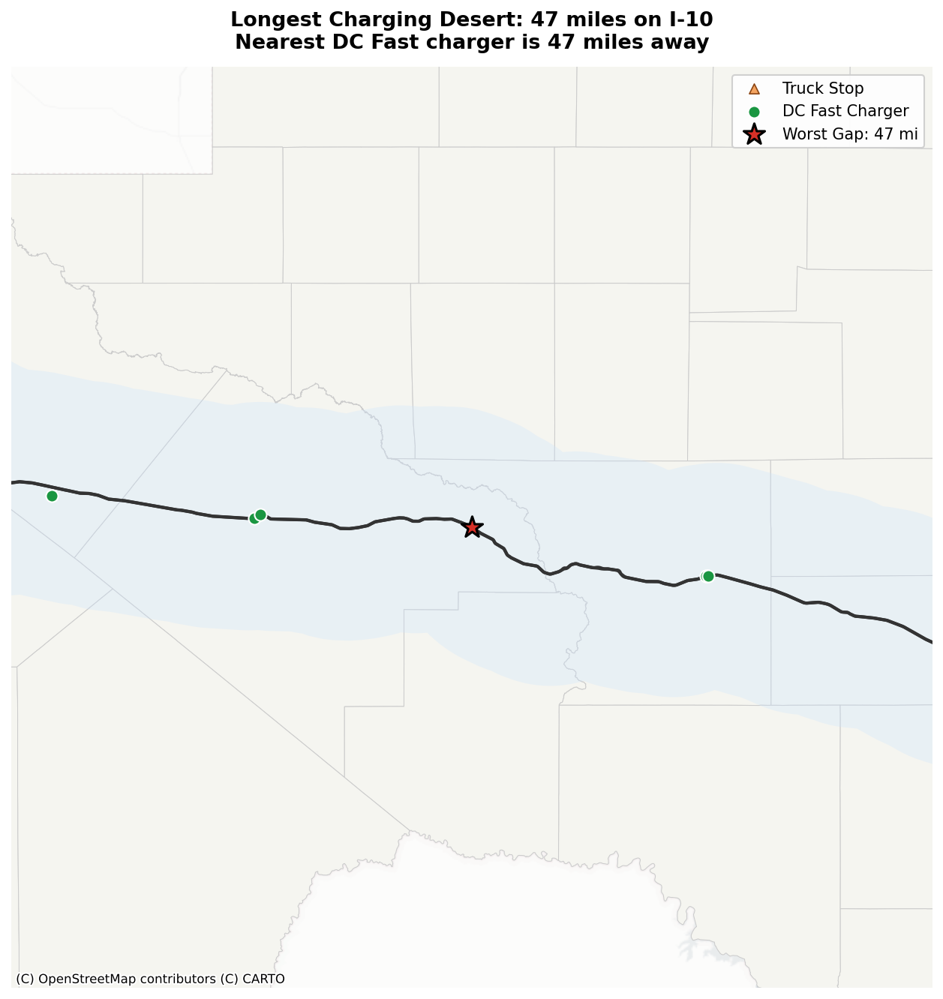
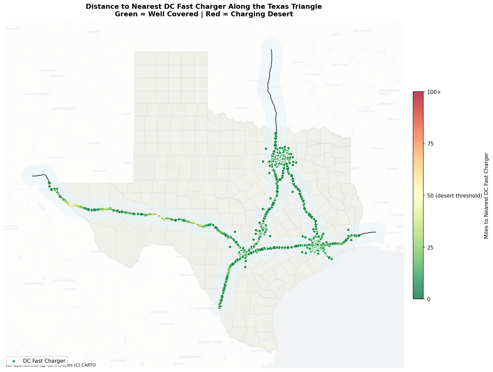

During my time at Traveloka, I worked with a group of friends on a sentiment analysis of what Indonesians were saying about electric vehicles on Twitter in mid-2022. Electric vehicle discussion was heated at the time because the Indonesian government had just announced plans to subsidize EV purchases, meaning people could buy an electric car or motorcycle at a reduced price. In December 2022, the government announced subsidies of around Rp 8 million for electric motorcycles and Rp 80 million for electric cars, with the formal program launching in March 2023.
One of the findings from that analysis was that even with growing enthusiasm, one of the most common concerns was about infrastructure. Specifically, whether PLN, Indonesia’s state electricity company, could actually support the charging network needed to make EVs viable at scale.
Now that I am in the US, I find that the infrastructure question looks very different here. EV stations exist not just for passenger cars but for freight trucks moving goods across the country. I was curious what that infrastructure actually looks like on the ground. That question led me to the Texas Triangle and two specific questions:
- Can an electric truck run the Texas Triangle freight corridor, I-10, I-35, and I-45, today? Is the charging infrastructure already there to support it?
- How vulnerable is the corridor to disasters that could cause charging outages?
The Data
I pulled EV charging station data from the NREL Alternative Fuels Station Locator via the AFDC API, filtering to public DC Fast chargers in Texas. I combined this with:
- Highway geometry from the US Census TIGER/Line primary roads dataset via the
pygrislibrary - Truck stops from OpenStreetMap via the Overpass API, tagged as fuel stops with heavy vehicle access or highway rest areas
- A 25-mile corridor buffer around I-10, I-35, and I-45, representing the detour distance a truck driver could reasonably take to reach a charger and return
Sample points were placed every 10 miles along each highway centerline, 750 points in total. Any point more than 50 miles from the nearest DC Fast charger is flagged as a charging desert, wide enough to strand a loaded electric semi running below peak range.
Finding 1: The Texas Triangle is Well-Covered
The Texas Triangle is the freight corridor formed by I-10, I-35, and I-45, connecting three of the largest cities in Texas, Houston, San Antonio, and Dallas, along some of the most trafficked freight interstates in the country.

The corridor has 629 DC Fast chargers, a median distance of 1.8 miles to the nearest charger, and zero charging deserts anywhere across the three interstates. For urban freight on that route, the infrastructure is there today.
But that aggregate number masks real variation between the three highways. The overall coverage looks good, but the distribution within the Triangle is not even.
Finding 2: I-10 is the Weak Link
When you break coverage down by highway, the asymmetry becomes clear:
| Highway | Sample Points | Charging Deserts | Max Gap | Safety Margin |
|---|---|---|---|---|
| I-10 | 253 | 0 | 47.5 mi | 2.5 mi |
| I-35 | 255 | 0 | 27.5 mi | 22.5 mi |
| I-45 | 294 | 0 | 13.2 mi | 36.8 mi |
I-45 and I-35 run through the more urbanized parts of Texas, which means chargers cluster naturally around city infrastructure. I-10 crosses long rural stretches with fewer population centers. The result is a maximum gap of 47.5 miles on I-10, sitting just 2.5 miles under the desert threshold.

That gap sits in a remote stretch of west Texas, near Fort Stockton, a town of around 8,000 people in a sparsely populated oil-producing region. There are truck stops in the area, but the nearest DC Fast charger is 47.5 miles away, which is not yet a desert.
Finding 3: Two Stations Away from a Crisis
The I-10 corridor passes the desert threshold, but the 2.5-mile margin means it has almost no redundancy. The gap near Fort Stockton is served by essentially one station cluster: the Flying J Travel Center, a Tesla Supercharger, and a Walmart Electrify America station a mile further away, both in Fort Stockton. If the Flying J goes offline for maintenance, the gap grows to 48.8 miles, still technically covered but with only 1.2 miles to spare. Remove both Fort Stockton stations during a grid outage or a major storm, and the gap jumps to 73.5 miles. That is a charging desert, by a wide margin.

Texas has demonstrated grid vulnerability before. Winter Storm Uri in February 2021 knocked out power for millions of Texans for days. If something similar happened during peak freight season, drivers on the I-10 corridor could end up stranded in that remote stretch of west Texas with no viable charging option for dozens of miles in either direction.
Compare that to I-45: its maximum gap is 13.2 miles. Removing the nearest charger to any I-45 sample point barely changes the picture, since there are always several nearby alternatives. I-45 has the redundancy that I-10 lacks.
The Interactive Dashboard
I built an interactive dashboard so you can explore the corridor at different zoom levels and see individual charger and truck stop details.
View the Texas Triangle EV Charging Gap Dashboard
You can toggle individual highways on or off, use the distance filter to isolate sample points above a certain gap threshold, and click any point or charger for details. Filtering to points more than 25 miles from a charger and showing only I-10 makes the fragility of the Fort Stockton stretch immediately visible.
Conclusion
The Texas Triangle passes the EV freight readiness test, but I-10 passes it with almost no margin. The corridor’s zero-desert result depends on a small cluster of stations near Fort Stockton remaining operational. Remove two of them and you have a 73.5-mile gap in a remote stretch with no nearby alternatives.
The policy implication is that specific EV infrastructure investment should prioritize redundancy on I-10’s rural stretches, not additional density in already well-served urban corridors. Adding more chargers to an already-dense urban section does nothing for a truck driver on the rural stretch of I-10. Filling the gap with a second independent station cluster, ideally on a different grid connection, would meaningfully reduce the risk of that stretch.
I-45 has 36.8 miles of safety margin while I-10 has just 2.5, and that is what the aggregate “zero deserts” number hides.
Could We Do This in Indonesia?
This analysis came together quickly because the data was ready for it. Charger locations came from the NREL AFDC, a federally maintained registry with a clean API. Highway geometry came from the US Census TIGER/Line dataset via a single pygris function call. Both are structured and built for exactly this kind of spatial query.
Indonesia’s EV ecosystem is moving fast, and there’s real energy behind it. Community efforts like Pom Listrik have done impressive work mapping SPKLU locations across the country, and PLN’s mobile app gives drivers real-time station info. These are genuine assets, built by people who care. But running the same corridor analysis on, say, the Trans-Java route from Merak to Banyuwangi would be a very different project today. Neither source exposes a bulk API, which means getting a corridor-wide charger list involves scraping or manual export, with no guarantee the data is complete or current. For road geometry, OpenStreetMap via the Overpass API is workable but slow, and toll road accuracy depends on how recently contributors have updated the tags.
This is where the gap shows up. Indonesia is still in the phase where the data lives in community maps and private apps, each valuable on its own, but a full corridor dataset would likely require weeks of scraping before it’s ready to analyze. For a country where the EV conversation is accelerating and infrastructure decisions are being made right now, that’s a real constraint on evidence-based planning. But once that data infrastructure is ready, corridor-level questions become answerable for any route in the country.
Methods
Tools: Python with GeoPandas, Shapely, pygris; QGIS; Leaflet and Chart.js for the interactive dashboard
Techniques: Nearest-neighbor spatial join via gpd.sjoin_nearest(), 25-mile corridor buffer, 10-mile sample point interpolation along a merged LineString, CRS EPSG:32614 (UTM Zone 14N) for accurate distance measurement within Texas
Limitations:
- The 50-mile desert threshold reflects a rule of thumb for loaded electric semis with real-world range degradation, not a universal standard. Different threshold assumptions would change the specific numbers but not the relative fragility of I-10 compared to I-35 and I-45.
- Physical truck accessibility at charger sites, including pull-through bays and minimum charging power requirements, was not assessed. Some stations in the dataset may not be physically usable by large commercial vehicles even if they appear nearby.
Structure and grammatical editing was assisted by Claude (Anthropic).